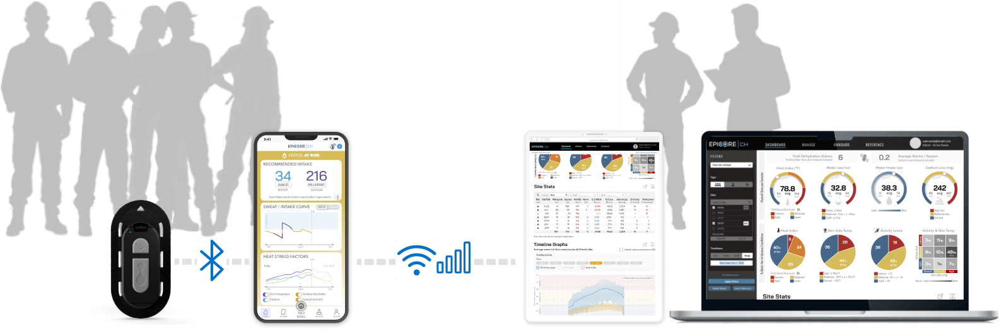
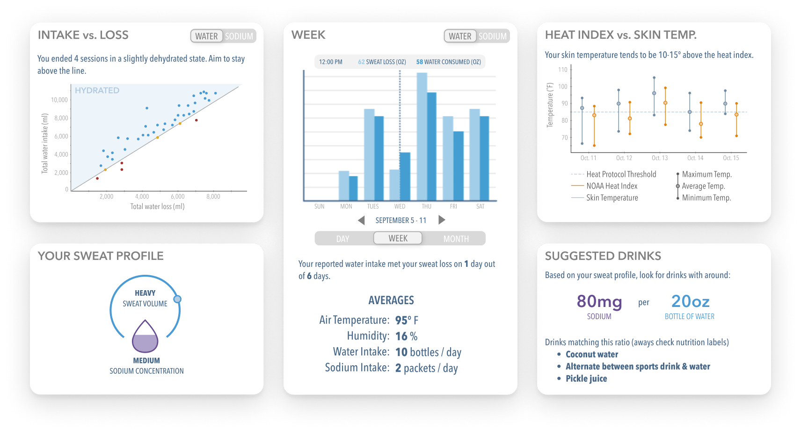

Epicore Biosystems
Outfitting “industrial athletes” for an era of climate change

| Project: | Climate Tech • Healthcare • Wearable • Mobile App • Responsive Web Portal |
| Scope: | Research • Design • User Testing |
| Roles: |
|
| Tools: | Figma |
| Year: | 2022-2024 |
Mitigating illness and injury for those working under extreme heat conditions
As global temperatures rise, health risks to workers are intensifying. OSHA averages address fatalities caused directly by heat events in limited scenarios; but for these “industrial athletes” sustained heat stress necessitates an individually-tailored approach to prevent cognitive impairment on the job site and chronic illnessbeyond work.
The Connected Hydration platform helps workers avoid heat stress from the onset, while enabling safety staff to effectively deploy and tune prevention strategies. Key to the effort are a wearable module / mobile app / web portal, which communicate data from workers’ arms to safety staff.
I co-designed the mobile and web portal UIs for field trials and commercial launch. The resulting product has since been:
- Featured in TIME, Forbes, Inc., IEEE Spectrum, and other leading publications
- Recognized for awards for design and function: A 2024 Red Dot Award for exceptional product design, and an Occupational Health & Safety Award for heat stress protection
- Building academic partnerships, contributing to heat stress research: University of Hawaii, UMass, and Northwestern, to name a few
- Keeping employees and contractors safe at a growing number of companies and industries
My Contributions
▶ Mobile UI: Rendered personal hydration patterns visible to workers
Epicore’s mobile app gives workers visibility into their sweat loss, and serves as a vital bridge between the system’s wearable modules and the cloud. With Epicore’s CTO, engineers, and industrial designer, we defined three core functions and one must-have “advanced” function:
- Communicate module and network connectivity, and sync status
- Propose actionable hydration recommendations
- Support the effortless logging of fluid intake
- Advanced: Present custom analysis that includes history, trends, and prediction
Communicating module and network connectivity, and sync status:
For many mobile apps, connectivity is a given; but Connected Hydration is frequently used in extreme, remote environments, where phones are locked away until a rest break. Core app functionality requires bluetooth for module-to-mobile data transfer, while advanced features leverage the cloud. We designed a visual language to communicate combinations of connection status and to facilitate troubleshooting.
Proposing actionable hydration recommendations:
We considered the nuances of dozens of variations that we arranged along a continuum from instruction through measurement. While instruction offered clarity, it risked paternalistic overtones. While measurement offered accuracy, it ignored context, and person-to-person variation.
Effortlessly logging fluid & sodium intake:
This crucial aspect of the system relies on workers’ willingness to consistently interact with the app during hot seasons. By understanding the challenges inherent in workers’ environments, we optimized for a fast, error-proof process, through mechanisms such as:
- A dedicated “intake drawer”
- A default menu, customizable through: scanning barcodes, selecting from a common list, or manual entry
- Favorites and recents
- A prominent call-to-action button
Presenting custom analysis that includes history, trends, and prediction:
Beyond the immediate tasks of viewing and replenishing water and sodium lost in sweat, workers we spoke to wanted to understand larger trends — whether to dial in performance, engage in friendly competition, or validate their intake recommendations. We worked with Epicore’s data science team to arrive at relevant visualizations for a non-technical audience:
This analysis has the additional benefit of highlighting Epicore’s technology: the module senses fluid and electrolyte loss, skin temperature under protective gear, and activity levels. Along with user inputs, weather data, and predictive AI, Epicore can provide rich insight for its end-users.
▶ Web Portal: Helped health staff to craft data-driven heat safety programs and targeted interventions
While Epicore’s mobile UI is oriented for individual hydration, the web portal enables safety staff to conduct heat safety analysis and response at the crew, site, and organizational levels.
On-site health and safety
Our primary user (persona: “Rory”), works on-location. Rory uses the portal as a tactical tool at the crew level, overseeing safety protocols across various sites. He deploys heat illness prevention training, ensures that systems are functioning and utilized, and orders provisions for work crews. His most pressing questions are: "Which crews are at risk? Who needs support now?"
To support Rory, we provided the following tools within easy reach (“above-the-fold”):
- A set of "risk filters” with common presets, and options to customize
- A leaderboard of site / field / crew stats, with the ability to sort by risk indicators
With these risk filters and leaderboard, Rory — who is forever on the go — can quickly assess which crews are most at risk, and which crews need support next.
Organization-wide health and safety
Our secondary user (persona: “Michelle"), works from headquarters rather than on-site. For her, the portal is a strategic tool, providing hydration data to help her craft and advocate for policies, confirm the efficacy of the system, and justify budget allocations. Michelle checks the portal infrequently, but is likely to study its content more in-depth than Rory. For Michelle, the portal answers the question, "What can CH tell us about the (relative) value of different health interventions, over time, across sites?"
To support Michelle, we imbued the portal with powerful interactive data visualizations:
- Scatter plots with timeline animation and annotation capabilities, to explore population-level data, and find causal relationships in support of improved health & safety
- Temporal graphs that cross reference measurements from module and environmental data
Outcomes
Connected Hydration’s platform continues to be adopted by workers and organizations internationally, helping guard against the dangers of extreme heat.
The platform, additionally, has policy-shaping impact, bringing heat stress effects to light for research and investigative journalism. Multi-national corporations and governments are already making more informed decisions, such as the first-ever US workplace standard for extreme heat, proposed in June 2024.
Epicore Biosystems
Maura Buckley
Stephen Lee, Co-founder & CTO
Weihua Li
Dave Macintosh
Alan Scarth
Julia Spinelli
Jessica Wallace
Don Wright
User Experience
Nilpa Jhaveri
Krispin Leydon
Mobile App Development
Tom DiZoglio
Graphic Design
Sarah LaTarte